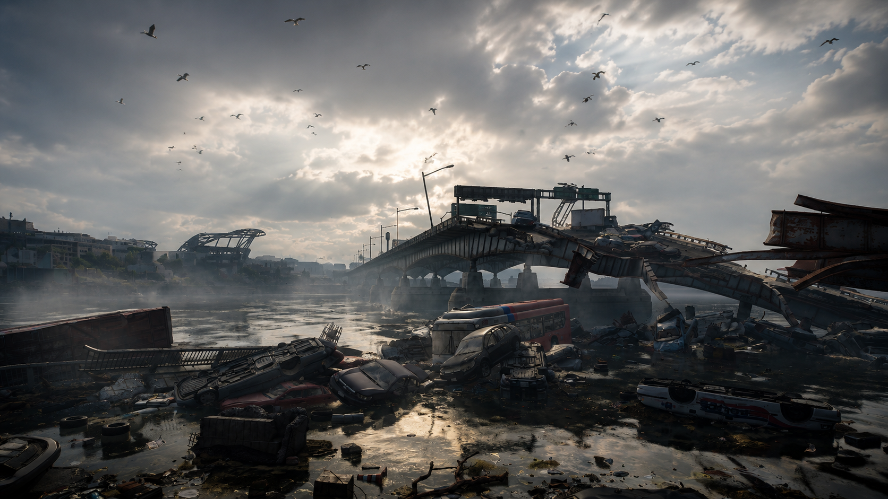

Lendária / Black Tusk
Controle de avanço e flanco
Roosevelt Island não é uma missão para correr. Cada área precisa ser limpa com calma, evitando que drones, granadeiros e rushers quebrem a formação do grupo.
Builds de controle e Skill Damage têm grande valor aqui, porque reduzem a exposição do time e ajudam a manter a pressão contra inimigos em posições altas ou distantes.
Controle
Flancos
Drones
Sobrevivência
Ver builds recomendadas